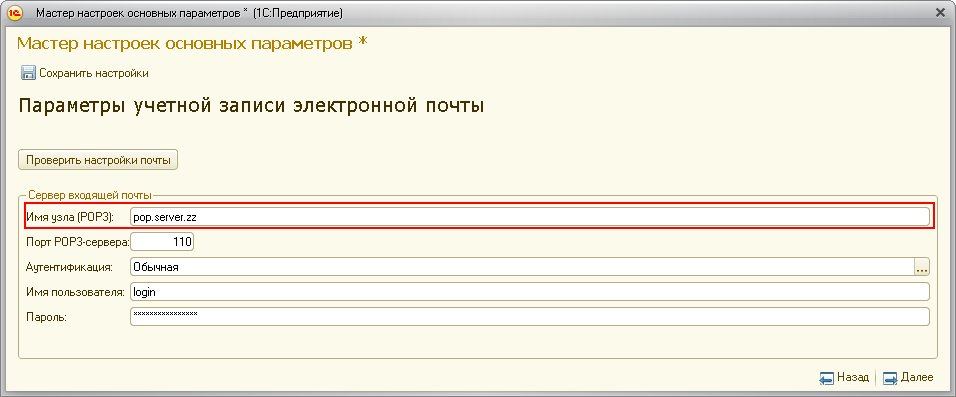
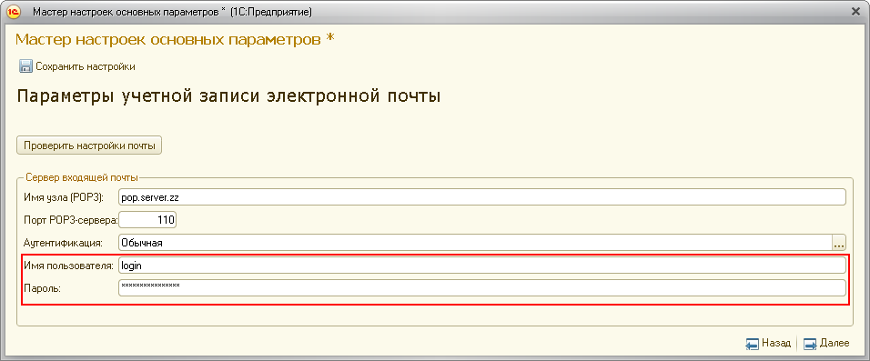
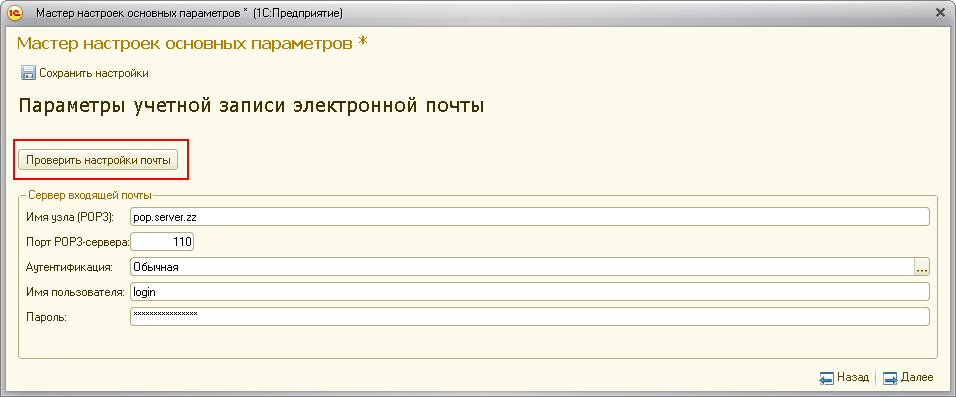

При выполнении контрольной процедуры возникли проблемы.
Чтобы понять, что привело к критической ситуации вам следует обратиться к содержимому поля "Дополнительные данные по задаче". Возможные варианты содержимого поля "Дополнительные данные по задаче":


Рекомендуется при настройке учётной записи воспользоваться возможностью проверки учётной записи.
